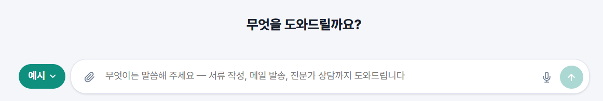
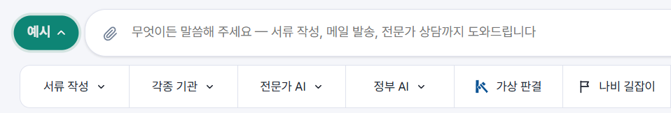

나비와 나비웹, 그리고 화면 한눈에 보기
1부는 나비웹 화면에 보이는 구성 항목을 하나씩 설명합니다. 먼저 나비웹이 무엇인지, 화면이 어떤 구역으로 나뉘는지 봅니다.
- 나비는 개인용 AI, 곧 "나만의 AI 비서"입니다. 오직 나 한 사람을 위해 일하며, 대답에서 그치지 않고 서류를 만들고 메일을 쓰고 기한을 챙깁니다.
- 나비웹은 수많은 나비가 모이는 메신저입니다. 사람과 사람, 사람과 AI, AI와 AI가 한 화면에서 대화하고, 상대가 병원이든 구청이든 화면은 같습니다. 그 자리의 비서만 달라집니다.
- 메뉴를 찾아 누르지 않고 "무엇을 하고 싶은지"만 말합니다. 일은 AI가 하고, 나는 결과를 확인하고 승인합니다. 보내기·제출 같은 중요한 단계는 내가 "좋아요" 한 뒤에만 진행됩니다.
- 이름·주소 같은 내 정보는 서버가 아니라 내 컴퓨터·폰의 PDV(개인 데이터 금고)에 보관합니다.
화면의 네 구역
컴퓨터에서 naviweb.kr을 열면 한 화면에 모든 기능이 모여 있습니다. 다음 네 구역으로 이루어집니다.
| 구역 | 위치 | 하는 일 | 자세히 |
|---|---|---|---|
| ① 위쪽 바 | 맨 위 | 로고·백서, 제안 게시판, 나비웹 홈페이지, 내 아이디 | |
| ② 왼쪽 메뉴 | 왼쪽 세로줄 | 홈, 서류, 메일, 나비 길잡이, 업무, 도움말, 설정 | |
| ③ 입력창 | 가운데 | 무엇이든 말로 시작하는 곳 | |
| ④ 예시 줄 | 입력창 아래(처음엔 접혀 있음) | 입력창 왼쪽 예시 버튼을 누르면 펼쳐지는, 자주 쓰는 말을 줄여 놓은 버튼들 |
이 밖에 화면 오른쪽 아래의 💬 혼디 대화 버튼이 있고(), 스마트폰에서는 대화 중심의 별도 화면이 열립니다.
이 설명서의 구성
| 부 | 장 | 내용 |
|---|---|---|
| 1부 구성 항목 | 1~10 | 화면의 각 항목이 무엇을 하는지 (이 부분) |
| 2부 실습 | 11~20 | 접속부터 메일, 서류 작성, 정보 공개 청구, 과제·업무까지 직접 따라 하기 |
| 3부 고급 | 21~ | 내 양식 만들기, PDV 구성, 프로필 웹페이지, 업무 심화 등. 새 장이 계속 추가됩니다. |
| 부록 | — | 안전과 한도, 자주 묻는 질문, 용어 풀이 |
위쪽 바
화면 맨 위의 바입니다. 왼쪽부터 차례로 봅니다.
아이디 표시가 뜻하는 것
| 이렇게 보이면 | 뜻 |
|---|---|
| 느긋한돌하르방 테스트 | 테스트 아이디로 입장한 상태입니다. 접속하면 자동으로 만들어집니다. 실제 개인정보를 넣지 마세요. |
| swift-heron-482 | 정식 아이디(전화 인증)로 로그인한 상태입니다. 내 메일 아이디가 보이고 전화번호는 화면에 나오지 않습니다. |
| 로그인 필요 | 로그인하지 않은 상태입니다. 글을 쓸 수는 있지만 보내기·저장·업로드는 로그인 후에 쓸 수 있습니다. |
아이디를 누르면 사용량 막대, 정식 아이디로 로그인/만들기, 보내는 이름 고치기 같은 메뉴가 나옵니다. 로그인 방법은 에서 실습합니다.
- 로고와 가운데 문구를 눌러 백서와 나비 소개가 내려오는 것을 보고 Esc로 닫아 보세요.
- 아이디 표시를 눌러 어떤 메뉴가 나오는지 읽어 보세요.
입력창과 예시 줄
홈 가운데에는 "무엇을 도와드릴까요?"와 입력창이 있습니다. 하고 싶은 일을 평소 말투로 적고 Enter(또는 ↑ 버튼)를 누르면, 기본 비서인 나만의 AI 비서가 읽고 알맞은 곳으로 이어 줍니다.
입력창 안의 버튼
| 버튼 | 하는 일 |
|---|---|
| 모드 표시(칩) | 입력창 왼쪽에 지금 어느 비서와 대화 중인지 나옵니다(예: 서류 작성, 병원, 변호사). 칩의 ×를 누르면 기본 비서로 돌아옵니다. |
| ＋ / 📎 첨부 | 파일(이미지·PDF·문서)을 붙여 비서가 읽게 합니다. |
| 🎤 음성 입력 | 말로 입력합니다. |
| ↑ 전송 | 글을 비서에게 보냅니다. 글자가 있어야 켜지고, 줄바꿈은 Shift+Enter입니다. |

"예시" 버튼과 예시 줄
예시 줄은 처음에는 접혀 있습니다. 입력창 왼쪽 초록색 예시 버튼(▾)을 누르면 입력창 아래로 예시 줄이 미끄러져 나오고(▴), 항목을 하나 고르면 다시 접힙니다.

이 줄의 버튼은 입력창에 쓸 수 있는 말의 줄임입니다. 입력창에 "소장 작성해 주세요"라고 쓰는 것과 서류 작성 ▾에서 소장을 고르는 것은 같은 일이니, 편한 쪽을 쓰세요. ▾가 붙은 버튼은 검색창이 달린 목록을 엽니다. 이름을 조금만 입력해도 걸러지고, 항목을 누르면 입력창 왼쪽에 칩이 생기며 그 비서와 대화가 시작됩니다.
나만의 AI 비서는 이렇게 연결합니다
- 말을 읽고 메일이면 메일로, 서류 작성이면 서류 작성으로, 증상 같은 상담이면 전문가 상담으로 이어 줍니다. 이어 줄 곳이 없으면 직접 답합니다. 이어 줄 때는 "○○로 연결했습니다"라는 안내가 나옵니다.
- 메일인지 서류인지 정말 알 수 없을 때만 선택 버튼으로 되묻고, 한 번의 요청에서 최대 2번까지만 묻습니다. 선택지에는 항상 "그냥 대화로 계속"이 있습니다.
- 비서는 지어내지 않습니다. 확인된 주소만 후보로 보여 주고, 점검하지 못한 일을 점검했다고 말하지 않습니다.
서류를 쓰는 동안의 입력창
서류를 작성하는 동안 입력창은 서류 이름만 보여 주고 잠깁니다. 글자를 바꾸면 작성 중인 서류가 바뀌어 버리기 때문입니다. 서류에 관한 질문·지시는 오른쪽 아래 💬 대화창에서 하고, 새 서류는 위쪽 바의 Draft 저장 후 새 서류로 시작합니다.
- 입력창에 "오늘 할 일이 뭐지?"라고 적어 비서가 직접 답하는 것을 보세요.
- 각종 기관 ▾를 눌러 칩이 생기는 것을 보고, ×로 빠져나와 보세요.
나비 길잡이와 업무 메뉴
메일 한 통, 서류 한 장을 넘어서는 큰 일을 다루는 두 메뉴입니다. 나비 길잡이는 계획을, 업무는 기록과 상대와의 합의를 맡습니다.
나비 길잡이
- 왼쪽 메뉴의 나비 길잡이(또는 예시 줄의 나비 길잡이)를 누르면 입력창이 과제 대화창이 되고, 그 아래에 과제 계획서가 대화에 따라 실시간으로 만들어지고 고쳐집니다.
- 계획서에는 할 일의 체크 칸과 진행률 막대가 있습니다. 칸을 누르면 진행 상황이 바뀌고, 다음 메시지부터 나비 길잡이가 그 상태를 보고 답합니다.
- 계획서 위 버튼: 고치기(직접 편집) · 복사 · 파일로 받기 · 삭제.
- 하위 메뉴 진행 중은 아직 끝내지 않은 과제, 완료한 과제는 끝낸 과제의 목록입니다. 과제를 누르면 대화창과 계획서가 다시 열립니다.
- 마감이 다가오면 알려 줍니다. 진행 중 화면에서 브라우저 알림과 서버 알림을 켤 수 있습니다().
업무(Case)
사건·거래·행사 한 건을 시작부터 종료·보관까지 상대와 함께 기록하는 곳입니다.
| 메뉴 | 뜻 |
|---|---|
| 맡은 일 | 내가 서비스를 제공하는 쪽으로 맡은 일 (변호사의 사건, 의사의 진료 등) |
| 맡긴 일 | 내가 전문가에게 맡긴 일. 진행 상황을 확인하고 서류를 올리고 요청할 수 있습니다. |
| 나 홀로 | 상대 없이 나 자신의 일을 스스로 처리하는 일 (본인 소송, 본인 치료 등) |
같은 사람이 건마다 다른 역할을 할 수 있습니다. 초대, 상태 흐름, 기록, 점검 같은 자세한 내용은 3부 에서 다룹니다.
- 왼쪽 메뉴에서 나비 길잡이의 진행 중과 업무의 나 홀로를 열어 빈 화면의 안내문을 읽어 보세요.
설정
왼쪽 메뉴 맨 아래 톱니바퀴입니다(위쪽 바 아이디 옆 ⋮로도 갈 수 있습니다). 위쪽에 탭이 줄지어 있습니다.
- 설정의 탭을 모두 눌러 보세요. (바꾸지 않고 보기만 해도 됩니다.)
도움말 · 혼디 대화 패널 · 스마트폰 화면
도움말
| 메뉴 | 내용 |
|---|---|
| 사용법 | 기본 → 활용 → 고급 순서의 단계별 퀴즈 코스. 한 페이지의 퀴즈를 모두 맞혀야 다음으로 넘어가며, 진행 상태는 이 브라우저에 저장됩니다. |
| Whitepaper | 나비 소개, 이 사용 설명서, 백서를 한 화면에서 전환해 읽습니다. |
💬 혼디 대화 패널
- 화면 오른쪽 아래 💬를 누르면 열립니다. 혼디 앱을 화면 위에 띄운 것으로, 다른 사용자와 직접 나누는 1:1 대화와 통화 요청을 받습니다.
- 닫기를 눌러도 숨기기만 해서 대화 요청을 계속 받습니다. 요청이 오면 저절로 열리고, 잘 열리지 않으면 ↗ 새 창으로 같은 화면을 따로 열 수 있습니다.
- 패널의 "AI 비서에게 요청하세요…" 입력창도 가운데 입력창과 같은 나만의 AI 비서입니다. 서류를 쓰는 동안에는 서류 비서와 대화합니다. 자세한 카드(고친 칸 목록, 되돌리기 등)는 가운데 화면에 나타납니다.
스마트폰
naviweb.kr에 접속하면 컴퓨터는 컴퓨터 화면, 스마트폰은 대화 중심의 스마트폰 화면(webapp.html)이 자동으로 열립니다.
| 기능 | 스마트폰 |
|---|---|
| 나만의 AI 비서와 대화, 메일 보내기 | 가능 (대화 중심) |
| 업무(Case) | 가능 — 화면 아래 탭에 맡은 일·맡긴 일·나 홀로가 나타납니다. |
| 비서의 점검 알림 | 가능 |
| 서류 작성·서류 고치기·양식 만들기 | 컴퓨터에서 쓰세요. 스마트폰 화면에는 아직 없습니다. |
| 혼디 대화 패널(💬) | 스마트폰에서는 혼디 앱이 곧 화면이라 별도 패널이 없습니다. |
- 도움말 → 사용법의 첫 페이지 퀴즈를 풀어 보세요.
- 스마트폰으로 naviweb.kr을 열어 컴퓨터와 화면이 어떻게 다른지 비교하세요.
나비웹 도우미 · 알림 · 안전장치
나비웹 도우미 (Chrome 확장)
나비웹이 대신 접속하기 어려운 사이트(제출처 웹사이트 등)에서 일을 거들어 주는 브라우저 확장입니다. 위쪽 바의 Chrome에 추가로 설치 안내를 봅니다.
- 설치 후 연결되면 서류 화면에 나비웹 도우미: 연결됨이 표시됩니다.
- 도우미가 일을 시작하고 승인하는 것은 항상 나입니다. 도우미는 브라우저의 확장에서 내가 승인해야 움직입니다.
- 도우미가 사이트에서 받아 온 첨부서류는 서류의 해당 항목에 넣어 주며, 진행 상황은 서류 화면에 보고합니다.
- 도우미에게 비밀번호·공동인증서 비밀번호·주민등록번호를 대신 말하지 마세요. 로그인과 인증은 내가 직접 합니다.
알림
- 앱 안 알림: 마감·기한이 다가오면 나비 길잡이와 비서가 알려 줍니다. 같은 알림이 반복되지 않도록 하루에 보이는 수에 상한이 있지만, 기한 초과처럼 중요한 알림은 줄이지 않습니다.
- 브라우저 알림 · 서버 알림: 나비 길잡이 → 진행 중 화면의 브라우저 알림 켜기, 서버 알림 켜기로 다른 창이 가려져 있을 때도 알림을 받습니다. 브라우저에서 알림을 막아 두었다면 앱 안 알림만 나옵니다.
안전장치
- 대화로 메일을 보낼 때는 받는 사람·제목·본문·시각을 보여 주고 내가 확인한 뒤에만 보냅니다.
- 서류의 칸을 말로 고칠 때, 내가 직접 쓴 칸은 지키고 되돌리기를 남깁니다().
- 번호류(주민등록번호·카드·계좌)는 비서에게 보내지 않습니다.
- 발송 한도: 이번 1통을 포함한 최근 5일 평균이 하루 100통을 넘으면, 초과분은 1통당 10 GDC가 부과됩니다. 발송이 막히지는 않으며 관리자 계정은 한도가 없습니다.
더 자세한 안전 수칙은 부록 · 안전하게 쓰기에 모았습니다.
- 나비 길잡이 → 진행 중 화면에서 알림 버튼이 어떻게 보이는지 확인하세요. (켜지 않아도 됩니다.)
실습 ① 접속하고 내 아이디 갖추기
목표: 나비웹을 열고, 내 아이디·보내는 이름·서명을 정해 둡니다. 약 10분.
접속
- 인터넷이 되는 컴퓨터 또는 스마트폰과 브라우저(크롬·엣지·사파리 등)가 필요합니다.
- https://naviweb.kr — 컴퓨터로 열면 컴퓨터 화면, 스마트폰으로 열면 스마트폰 화면이 자동으로 나옵니다. (직접 주소: 컴퓨터
naviweb.kr/desktop.html, 스마트폰naviweb.kr/webapp.html)
테스트 아이디로 먼저 써 보기
- 테스트 기간에는 사이트에 들어가기만 하면 단어로 된 아이디(예: 느긋한돌하르방)가 자동으로 만들어져 바로 쓸 수 있습니다. 가입 절차가 없습니다.
- 나비가 쓰는 AI 사용 비용(DeepSeek API 실비) 500원까지 무료입니다. 오른쪽 위 아이디를 누르면 사용량 막대가 보입니다.
- 500원이 차면 유료 회원 전환 안내창이 뜨고, 전환하기 전까지는 사용이 멈춥니다.
정식 아이디로 로그인하기·만들기
- 오른쪽 위 아이디를 누릅니다.
- 이미 정식 아이디가 있으면 정식 아이디로 로그인, 없으면 정식 아이디 만들기(혼디 가입 화면)를 누릅니다.
- 로그인은 전화번호 뒷 8자리를 입력하고 📱 폰으로 승인받기를 누른 뒤, 스마트폰 알림에서 본인 확인을 누르면 끝입니다.
- 처음 로그인하면 테스트 아이디에서 만든 연락처·초안·캠페인 등을 옮길지 묻습니다. 건수를 보여 준 뒤 확인을 받고 옮기며, 옮긴 뒤에는 그 테스트 아이디로 다시 로그인할 수 없습니다.
메일 아이디 정하기
처음 로그인하면 "메일 아이디를 정해 주세요" 창이 한 번 나옵니다. 기본 아이디를 그대로 쓰거나(이 아이디 사용), 직접 정하거나, 나중에 하기를 누릅니다. 나중에 하기를 눌러도 기본 아이디가 쓰이고 언제든 바꿀 수 있습니다. 같은 창에서 보내는 이름(선택)도 정할 수 있고, 아래 미리보기로 받는 사람에게 보일 모습을 확인합니다.
나중에 바꾸려면 설정 → 계정(또는 아이디 옆 ⋮)에서 아이디 바꾸기 칸에 적습니다. "사용할 수 있어요 ✓"가 나오면 이 아이디로 저장을 누릅니다.
| 아이디 규칙 | 내용 |
|---|---|
| 글자 | 3~30자. 영문 소문자·숫자·하이픈(-)·밑줄(_). 한글·대문자 불가. 영문 또는 숫자로 시작하고 끝나야 하며 숫자만으로는 불가. |
| 금지 | 시스템·기관을 사칭할 수 있는 이름(admin, support, hondi …), 이미 쓰는 아이디 |
| 횟수 | 30일에 3번까지. 가입 직후 처음 고르는 것은 횟수에 포함되지 않음 |
보내는 이름과 서명
- 보내는 이름은 설정 → 계정의 "보내는 사람 표시"에 적고 미리보기를 확인한 뒤 저장합니다. 40자까지이며 < > " @ \ ; : , 문자, 줄바꿈, 인증처럼 보이는 기호(✓ ✅ 🔒 등), 서비스·기관으로 오해할 말(혼디, 관리자, 공식, 고객센터 등)은 쓸 수 없습니다. 바꾸면 이후에 보내는 메일부터 적용됩니다.
- 서명은 설정 → 서명 탭에 적습니다(1000자까지).
- naviweb.kr을 컴퓨터와 폰에서 각각 열고 오른쪽 위 아이디를 확인하세요.
- 아이디를 눌러 사용량 막대를 확인하세요.
- 설정 → 계정에서 보내는 이름을 정하고 미리보기를 확인하세요.
- 설정 → 서명에 한 줄("○○ 드림")을 저장하세요.
실습 ② 나만의 AI 비서와 대화하기
목표: 요청을 구체적으로 말해 원하는 결과를 얻는 요령을 익힙니다.
| 이렇게 말하면 | 비서가 하는 일 |
|---|---|
| "김 교수님께 감사 편지 써 줘" | 메일로 이어 줍니다. 한 분께 보내는 편지인지, 여러 명에게 보내는 캠페인인지에 맞춰 연결합니다. |
| "소유권이전등기 신청서 작성해 줘" | 서류 작성으로 이어 줍니다. 분야는 말에서 알아봅니다. |
| "허리가 아파요" | 전문가 상담(의사)으로 이어 줍니다. 상담 뒤 "이어서 서류 작성" 버튼이 나오기도 합니다. |
| "오늘 할 일이 뭐지?" | 이어 줄 곳이 없으면 직접 답합니다. 기한이 가까운 일이 있으면 함께 알려 줍니다. |
요령
- 한 번에 다 말하지 않아도 됩니다. 부족한 부분은 비서가 되묻습니다. 마음이 바뀌면 "받는 사람에서 박OO 님은 빼 주세요"처럼 그냥 말합니다.
- 누구에게, 무엇을, 언제까지, 어떤 말투로를 넣으면 더 정확합니다. 예약도 말로 합니다("내일 오전 9시에 보내도록 예약해 주세요").
- 웹페이지 주소를 붙여 넣으면 내용을 읽어 반영합니다(GitHub 저장소 주소는 설명과 최근 변경 내용). 단 로그인이 필요한 페이지는 읽을 수 없고, 하루에 열어 볼 수 있는 횟수에 한도가 있습니다.
- 모를 땐 물어보세요. "내 메일 주소가 뭐예요?", "오늘 몇 통 보냈어요?"도 됩니다.
| 하고 싶은 일 | 이렇게 말해 보세요 |
|---|---|
| 한 명에게 보내기 | 김민수 님께 어제 보내 주신 자료 잘 받았다고 감사 메일 써 주세요. |
| 여러 명에게 | 주소록에서 "로스쿨" 태그가 붙은 분들께 학회 일정 안내 메일을 보내 주세요. |
| 받을 사람 찾기 | 제주대학교 컴퓨터공학과 교수님들께 보내고 싶은데 누구에게 보내면 될까요? |
| 글 다듬기 | 조금 더 정중하게, 세 문장으로 줄여 주세요. |
| 지난 일 찾기 | 저번에 서울대 교수님들께 보낸 캠페인 명단 보여 주세요. |
- 같은 부탁을 막연하게 한 번, 구체적으로 한 번 써 보고 결과를 비교하세요.
- "허리가 아파요"를 보내 어떤 비서로 이어지는지 보고 칩의 ×로 빠져나오세요.
실습 ③ 첫 메일 보내기
목표: 대화로 메일을 작성하고 확인한 뒤 보냅니다. 받는 사람은 내 다른 메일 주소로 하세요.
방법 A · 대화로 보내기 (가장 추천)
- 홈 입력창에 평소 말투로 적습니다. 이번 주 금요일 오후 3시에 팀 회의가 있다고 (내 다른 메일 주소)에 알려 주세요.
- 비서가 메일로 이어 주고 누구에게 · 왜/무엇을 · 제목과 본문 초안을 확인합니다. 이름만 말해도 주소록에서 먼저 찾습니다.
- 최종 확인에 받는 사람·제목·본문·보낼 시각이 한꺼번에 나옵니다. 꼼꼼히 읽습니다.
- 괜찮으면 "네, 보내 주세요", 고칠 곳이 있으면 "제목을 '금요일 회의 안내'로 바꿔 주세요"라고 말합니다.
- 보냈다는 안내가 나오면 끝입니다. 메일 → 보낸메일함에서 확인합니다.
방법 B · 빠른 발송
메일 → 빠른 발송에 받는 사람(이메일 주소 하나), 제목, 내용을 적고 보내기를 누르면 즉시 나갑니다. 보내면 화면 맨 위에 받는 사람·제목·시각·보낸 사람을 보여 주는 확인 카드가 나옵니다. 확인 단계가 없으니 보내기 전에 직접 읽으세요.
방법 C · 직접 편지 쓰기
메일 → 편지쓰기의 편집기에서 직접 씁니다(글자 꾸미기 가능). 파일은 한 개당 25MB까지 첨부합니다. 임시저장하면 메일 → Draft에서 이어 쓰기로 다시 엽니다. 비서와 만든 초안도 이 화면으로 옮겨 손으로 다듬을 수 있습니다.
- 방법 A로 내 다른 주소에 첫 메일을 보내세요.
- 받은 메일에서 보낸 사람 이름·제목·서명이 의도대로 나왔는지 확인하세요.
- 편지쓰기에서 글을 쓰다 임시저장하고 Draft에서 이어 써 보세요.
실습 ④ 주소록 정리와 여러 사람에게 보내기
목표: 주소록을 만들고 정리하고, 여러 사람에게 같은 메일(캠페인)을 보냅니다.
주소록
- 메일 → 주소록을 엽니다. ③에서 메일을 보낸 상대가 이미 자동 저장되어 있습니다.
- 사람 한 명을 직접 추가하고 태그(예: 세미나)를 붙여 봅니다. 저장 항목: 이름·이메일·직업·소속 기관·학과/부서·주소·웹사이트·메모·관계·태그.
- 엑셀·CSV에 연락처가 있으면 주소록 화면에서 파일을 골라 업로드해 한꺼번에 등록합니다.
- 연락처가 많아지면 소속 기관 트리(학교 > 대학 > 제주대학교 > 컴퓨터공학과)로 정리합니다. 소속이 빈 연락처는 자동 분류 마법사가 경로를 제안하는데, 제안은 바로 적용되지 않고 훑어보고 틀린 것을 고친 뒤 한꺼번에 적용합니다.
| 하고 싶은 일 | 이렇게 말해 보세요 |
|---|---|
| 찾기 | 홍길동 님 연락처 찾아 주세요. |
| 태그 붙이기 | 방금 보낸 분들께 "세미나" 태그를 붙여 주세요. |
| 중복 정리 | 중복된 연락처를 합쳐 주세요. |
| 주고받은 메일 보기 | 홍길동 님과 주고받은 메일만 보여 주세요. |
캠페인: 여러 사람에게 보내고 답장 모으기
| 단계 | 하는 일 |
|---|---|
| 1. 목적 확인 | 무엇을 위한 메일인지 정리합니다. |
| 2. 받을 사람 찾기 | 직접 알려 주거나, 웹에서 찾아 후보를 보여 줍니다(확인된 주소만). |
| 3. 주소록 반영 | 새 사람은 자동으로 주소록에 저장됩니다. |
| 4. 발송 | 최종 확인 후 보냅니다. |
| 5. 답장 모으기 | 정한 시각까지 답장을 모아 요약(다이제스트)을 만듭니다. |
| 6. 보고 | 요약을 받아 보고, 원하면 기관별 응답률 보고서도 받습니다. |
| 7. 종료 | 끝났다고 말하면 마무리하고 기록으로 남깁니다. |
본문에 추적 링크를 넣도록 요청하면 받은 사람이 링크를 눌렀는지 사람별로 알 수 있습니다. 응답률은 "기관별로 발송, 회신, 응답률을 표로 보여 주세요", "답장 중 긍정적인 것만 보여 주세요"처럼 물어봅니다. 만든 캠페인은 메일 → 내 캠페인에서 검색하고 🔄 이어서 대화하기로 이어갑니다(정리된 핵심만 불러와 빠릅니다).
- 주소록에서 방금 보낸 상대를 찾고, 사람 한 명을 직접 추가해 태그를 붙이세요.
- 받는 사람 두세 명(내 다른 주소 포함)으로 캠페인을 만들어 미리보기까지만 해 보세요. 내 캠페인에 목록이 보이는지 확인하세요.
실습 ⑤ 서류 작성: 시작부터 저장까지
목표: 서식 서류 하나를 처음부터 끝까지 작성하고 저장합니다. 예로 "소장"이나 "소유권이전등기 신청서", 또는 쉬운 행정 서류를 고르세요. (제출은 하지 않습니다.)
- 내 정보 준비하기. 설정 → PDV에서 이름·주소·연락처를 저장해 둡니다. 서류를 열면 해당 칸에 자동으로 들어가고 "내 정보 칸"으로 표시됩니다. 주민등록번호·계좌·카드번호 같은 번호류는 비서에게 보내지 않으니 서류 화면에서 직접 적습니다.
- 서류 열기. 입력창에 말로 시작합니다. 소장 작성해 주세요. 서류 이름이 목록과 정확히 맞으면 바로 열리고, 애매하면 비서가 알맞은 서류를 찾아 열어 줍니다. 또는 서류 작성 ▾에서 검색하거나 왼쪽 서류 → 서류 작성에서 고릅니다.
- 질문에 답하기. 서류가 열리면 입력창은 서류 이름만 보이며 잠기고, 비서가 필요한 것을 오른쪽 아래 💬 대화창에서 하나씩 묻습니다. 사건 내용 같은 것을 평소 말투로 답하면 칸이 채워집니다.
- 빈 칸 채우기. 대화창에 "빈 칸을 채워 줘"라고 하면 아는 값으로 빈 칸을 채웁니다. 모르는 사항은 지어내지 않고 비워 두며, 내가 알려 줄 것만 한 줄로 말해 줍니다. 빈 칸을 채워 줘.
- 자료 첨부하기. 신분·계약 내용·금액·사건 경위처럼 비서가 모르는 사실은 관련 문서나 사진(신분증·계약서·고지서·등기부·영수증 등)을 📎(서류 화면 또는 대화창)로 올려 달라고 합니다. 글 파일·사진·PDF를 지원하며 한 번에 4개 안팎, 파일당 8MB 이하입니다. 읽는 진행률이 나오고 끝나면 대화창에 알려 줍니다.
- 검토하기. 서류 화면에서 칸을 훑어봅니다. 비서가 쓴 칸에는 "SP" 배지가 붙고, 내가 직접 쓴 칸은 비서가 함부로 바꾸지 않습니다. 틀린 칸은 눌러서 직접 고칩니다. 서류 안에서 고쳐도 PDV의 원본 정보는 바뀌지 않습니다.
- 저장하기. 다 맞으면 작성 완료로 저장을 누릅니다. Word 파일로 받고 서류 → 작성한 서류에 보관됩니다.
도중에 멈췄다면
쓰다가 다른 화면으로 나가면 Draft로 이 기기에 자동 저장됩니다. 보관되는 것은 요청문과(받아 둔 경우) 작성본 Word 파일이며, 서류 페이지의 입력칸까지 그대로 복원되지는 않습니다. 서류 → Draft에서 열어 이어 가되, 오래 걸리는 서류는 중간에 작성 완료로 저장해 두는 편이 안전합니다. 다른 서류를 시작하려면 위쪽 바의 Draft 저장 후 새 서류를 누릅니다.
질문도 해 보세요
대화창은 서류를 아는 서류 비서입니다. "관할 법원은 어디죠?", "이 칸에는 뭘 쓰나요?"처럼 물으면 현재 서류를 보고 1~2문장으로 답합니다.
| 하고 싶은 일 | 어디에서 |
|---|---|
| 어떤 서류를 쓸지 찾기·고르기 | 입력창 |
| 칸을 눌러 직접 쓰기·고치기 | 서류 화면 |
| 질문, 말로 고치기, 대신 채우기, 자료 첨부 | 혼디 대화창 💬 |
| 이름·주소 등 내 정보 보관, Draft·완성본 저장 | PDV |
- PDV에 이름·연락처를 저장한 뒤 서류를 열어 "내 정보 칸"이 채워지는지 보세요.
- 대화창에서 "빈 칸을 채워 줘"를 하고, 채워진 칸 하나를 직접 고치세요.
- 비서가 자료를 요청하면 📎로 사진이나 문서를 첨부해 보세요.
- 쓰다가 멈추고 서류 → Draft에서 다시 열어 보세요. 무엇이 남아 있는지 확인한 뒤 작성 완료로 저장하세요.
실습 ⑥ 서류를 말로 고치고, 전달·제출 준비하기
목표: 완성한 서류의 칸을 말로 고치고 되돌려 보고, 메일 첨부와 제출 안내까지 해 봅니다.
말로 고치기
서류를 다 만든 뒤에는 칸을 하나씩 누르지 않고 입력창이나 💬 대화창에 말로 시킬 수 있습니다.
신청 사유를 조금 더 정중하게 고쳐 줘. 매매대금을 4억 원으로 바꿔 줘. 비고 칸에 잔금은 12월 말까지라고 적어 줘.- 나만의 AI 비서가 말을 읽고 서류를 고치라는 뜻인지 판단합니다. 비서는 어느 칸을 고칠지만 정하고, 값은 서류를 작성한 전문 비서가 씁니다.
- 바뀐 칸은 강조 표시와 "SP" 배지로 보이고, 대화창에 이전 값 → 새 값 카드가 나옵니다.
- 마음에 들지 않으면 카드의 되돌리기를 누릅니다. 그 사이 같은 칸을 직접 고쳤다면 그 칸은 건드리지 않습니다.
직접 쓴 칸은 지켜집니다
| 칸의 상태 | 비서가 고칠 때 |
|---|---|
| 빈 칸 | 바로 채웁니다. |
| 비서가 쓴 칸 | 바로 고칩니다(되돌리기 가능). |
| 내가 직접 쓴 칸 | "매매대금을 바꿔 줘"처럼 칸 이름을 말했을 때만 바로 고칩니다. 말하지 않은 칸은 "직접 쓰신 ○○ 칸을 바꿀까요?" 카드가 나오고 바꾸기 / 그대로 두기를 고릅니다. |
| 내 정보 칸 | 이름·주소처럼 내 정보에서 온 값은 서버로 보내지 않습니다. |
- 칸이 있는 서식 서류만, 다 만든 뒤에, 컴퓨터에서 됩니다. 비서가 서류를 쓰는 중이면 "잠시 뒤 다시 요청해 주세요"가 나옵니다.
- 한 번에 최대 12칸까지 고칩니다. 주민등록번호·카드번호와 "민감 항목" 칸의 값은 비서에게 보내지 않으며, 서류 안의 문장은 지시가 아니라 자료로만 취급합니다.
메일에 첨부해 전달하기
서류 화면 아래쪽 전달을 누르면 완성한 서류가 메일 쓰기 화면에 첨부됩니다. 받는 사람은 ③처럼 내 다른 주소로 하세요.
제출 안내 받기 (연습 때는 마지막 단계 직전까지만)
나비웹이 대신 접수하지는 못하므로, 제출을 누르면 대화창이 제출 안내 비서로 바뀌어 한 단계씩 안내합니다.
- 빈 칸이 남아 있으면 "아직 내용을 다 채우지 않으셨습니다. 제가 도와드릴까요?"라고 묻습니다. "네"라고 하면 채워 주고, 내가 검토한 뒤 "제출 진행"이라고 말합니다.
- 빈 칸이 없으면 서류를 읽고 눈에 띄는 문제를 알려 주며, 서류 종류와 내용(관할 법원 등)으로 제출 기관을 특정합니다. 불확실하면 내게 묻습니다.
- 공동인증서 준비 → 제출처 사이트 접속·로그인 → 서류 파일(PDF/MS-Word) 첨부 → 수수료·인지대 납부(해당 시) → 접수증·접수번호 보관 → 처리 상황 확인 순서로 안내합니다. 필요하면 나비웹 도우미가 거들 수 있습니다().
- 완성한 서류에서 "신청 사유를 더 정중하게 고쳐 줘"라고 말하고, 바뀐 칸과 카드를 확인한 뒤 되돌리기를 눌러 보세요.
- 직접 쓴 칸을 칸 이름 없이 고쳐 달라고 해서 비서가 먼저 묻는지 확인하세요.
- 전달로 서류를 내 다른 메일에 첨부해 보내 보세요.
- 제출을 눌러 안내의 첫 단계까지만 읽어 보세요.
실습 ⑦ 내 양식으로 쓰기: 양식 업로드와 내 서류함
목표: 목록에 없는 양식을 올려 서류를 쓰고, 자주 쓰는 양식을 내 서류함에 담습니다.
- 양식 올리기. 서류 작성 ▾ → 양식 업로드(검색창 바로 아래)에서 가지고 있는 양식(이미지·PDF)을 올립니다. 서류를 고르기 전에 올려야 그 양식으로 서류를 만듭니다.
- 양식 읽기. 나비가 양식을 읽어 칸을 만듭니다. 이미 있는 양식과 같으면 기존 양식에 반영해 작성본을 보여 주고, 새 양식이면 서류 목록에 추가할지 묻습니다.
- 작성하기. ⑤와 같은 방식으로 칸을 채우고 검토하고 저장합니다.
- 내 서류함에 담기. 작성 중 위쪽 바의 ★ 내 서류함에 담기를 누르면 내 서류함 → 자주 쓰는 양식에 담깁니다. 서류 화면에서 올린 양식은 올려 둔 양식에 보관됩니다.
- 다시 쓰기. 서류 → 내 서류함에서 항목을 누르면 서류 작성 화면에서 바로 열립니다. 필요 없는 양식은 목록에서 지울 수 있습니다.
| 내 서류함 칸 | 들어오는 것 |
|---|---|
| 자주 쓰는 양식 | 서류 작성 중 ★ 내 서류함에 담기로 담은 양식 |
| 내가 만든 양식 | 새 양식 만들기로 직접 만든 양식 () |
| 올려 둔 양식 | 서류 화면에서 올린 양식 파일 |
모두 이 기기의 PDV에 보관되므로 다른 기기에서는 보이지 않습니다.
- 가지고 있는 신청서 양식(이미지나 PDF) 하나를 올려 칸이 만들어지는지 보세요. (개인정보가 담긴 문서는 피하세요.)
- 작성 중 ★ 내 서류함에 담기를 누르고, 내 서류함에서 다시 열어 보세요.
실습 ⑧ 정보 공개 청구서 만들기
목표: 공공기관이 가진 자료를 요청하는 청구서를 대화로 만들고 내보냅니다. 연습에서는 정보공개포털에 제출하지 마세요.
- 시작. 예시 줄의 서류 작성 ▾ → 정보 공개 청구를 고릅니다. 입력창이 대화창이 되고 그 아래가 청구서 칸이 됩니다.
- 알고 싶은 것 말하기. 제주도 지난 3년 간 공공 도서관 예산과 집행 내역을 알고 싶어요. 파일을 붙이거나 음성으로 입력할 수도 있습니다.
- 청구서 확인. 대화에 따라 청구서가 만들어집니다. 청구 대상 기관과 청구 내용을 읽고, 직접 고쳐 쓸 수 있습니다. 청구인 정보는 [대괄호] 칸에 직접 적습니다.
- 내보내기. 복사 또는 파일로 받기를 합니다.
- 제출. 정보공개포털 열기로 open.go.kr에 가서 내가 직접 제출합니다. 나비웹이 대신 제출하지 않습니다.
- 위 예시처럼 말해 청구서를 만들고, 한 문장을 직접 고쳐 보세요.
- 파일로 받기로 저장해 보세요. (제출은 하지 않습니다.)
실습 ⑨ 큰 일 관리하기: 나비 길잡이와 업무
목표: 큰 과제를 계획서로 만들어 진행하고, 한 건의 일을 업무로 기록합니다.
나비 길잡이로 과제 계획 세우기
- 왼쪽 메뉴 나비 길잡이(또는 예시 줄의 같은 버튼)를 누르면 입력창이 과제 대화창이 됩니다.
- 하려는 과제를 말합니다. 다음 달 동네 책 모임을 준비하고 싶어요. 장소 신청, 안내 메일, 참가자 모집이 필요해요.
- 몇 번의 대화(보통 3회 안팎) 안에 과제 계획서 초안이 아래에 만들어집니다. 마감일이 있으면 말해 주세요.
- 할 일을 마칠 때마다 계획서의 체크 칸을 눌러 진행률을 올립니다. 다음 메시지부터 나비 길잡이가 그 상태를 보고 답합니다.
- 계획서를 직접 고치기, 복사, 파일로 받기 할 수 있고, 필요 없으면 삭제합니다.
- 나비 길잡이 → 진행 중에서 과제 목록을 보고, 끝나면 완료한 과제로 옮겨집니다. 같은 화면에서 알림(브라우저·서버)을 켤 수 있습니다.
업무(나 홀로)로 한 건 기록하기
- 왼쪽 메뉴 업무 → 나 홀로에서 ＋ 새 일을 누릅니다.
- 제목("책 모임 준비")과 종류(사건·건 / 거래 / 행사)를 정하고 만들기를 누릅니다. 나 홀로는 상대가 없어 바로 진행 중으로 시작합니다.
- 진행 기록에 메모를 남깁니다. 메모는 내부용이거나 상대에게 공유할 수 있습니다.
- 소통 이력에 ③에서 보낸 메일을 기록합니다. 메일·채팅·전화·화상·대면·서류로 나눈 소통을 누가·누구와·언제·어디서·어떻게·무엇을·왜(6하원칙)로 남기고, 목적은 안내·요청·보고·상담·합의·결제에서 고릅니다.
- 기한을 하나 넣습니다("답변서 제출 2026-11-20"). 비서가 7일 전·1일 전·당일에 알려 줍니다. 내가 입력한 날짜 기준이며 법정 기한을 계산해 주지 않습니다.
- 입력창에 "오늘 할 일이 뭐지?"라고 물어 기한이 함께 나오는지 확인합니다.
- 나비 길잡이로 계획서를 만들고 체크 칸 두 개를 눌러 진행률이 바뀌는지 보세요.
- 업무(나 홀로)를 만들어 메모, 소통 이력, 기한을 각각 하나씩 넣어 보세요.
종합 실습과 졸업 점검표
이제 배운 것을 한 번에 이어서 써 볼 차례입니다. 가상의 일 하나를 처음부터 끝까지 해 봅니다.
실습 시나리오: "다음 달 동네 책 모임 준비"
- 접속하기 () —
naviweb.kr을 열고 오른쪽 위에 내 아이디가 보이는지 확인합니다. - 계획 세우기 () — 나비 길잡이로 책 모임 준비 계획서를 만듭니다.
- 말로 메일 보내기 () — "책 모임 안내 메일을 써 줘, 받는 사람은 내 다른 메일 주소야"로 초안을 읽고 고쳐 보냅니다.
- 주소록 확인하기 () — 방금 보낸 상대가 저장됐는지 보고 태그를 붙입니다.
- 서류 작성하기 () — "장소 사용 신청서를 작성해 줘"처럼 말해 서류 하나를 끝까지 채우고 저장합니다.
- 말로 고치기 () — "신청 사유를 더 정중하게 고쳐 줘" 후 되돌리기도 눌러 봅니다. 전달로 서류를 메일에 첨부해 내게 보냅니다.
- 양식 보관하기 () — ★ 내 서류함에 담아 다음에 다시 엽니다.
- 업무로 기록하기 () — 나 홀로로 "책 모임 준비"를 만들고 메일을 소통 이력에, 신청 마감을 기한에 넣습니다.
- 마무리하기 — 계획서의 할 일을 모두 체크해 완료한 과제로 옮기고, 업무를 종료해 보관합니다.
졸업 점검표
아래를 직접 할 수 있으면 나비웹을 자유롭게 쓸 준비가 된 것입니다. 막히는 항목은 괄호 속 장으로 돌아가세요.
- ☐ 나비와 나비웹이 무엇인지, 내 정보가 어디에 저장되는지 내 말로 설명할 수 있다. ()
- ☐ 화면의 네 구역과 왼쪽 메뉴 묶음이 각각 무엇을 하는지 안다. ()
- ☐ 모드 표시(칩)를 보고 지금 어느 비서와 대화 중인지 알며, ×로 되돌릴 수 있다. ()
- ☐ 컴퓨터와 폰에서 나비웹을 열고 내 아이디, 보내는 이름, 서명을 정할 수 있다. ()
- ☐ 말로 메일을 작성하고 내용을 확인한 뒤 보낼 수 있다. ()
- ☐ 주소록·캠페인·메일함에서 원하는 것을 찾을 수 있다. ()
- ☐ 서류 하나를 처음부터 끝까지 작성하고 저장·보관할 수 있다. ()
- ☐ 완성한 서류의 칸을 말로 고치고 필요하면 되돌릴 수 있으며, 제출은 내가 직접 한다는 것을 안다. ()
- ☐ 양식을 올려 쓰고 내 서류함에 담을 수 있다. ()
- ☐ 정보 공개 청구서를 만들어 직접 제출 준비를 할 수 있다. ()
- ☐ 나비 길잡이 계획서와 업무 한 건을 만들어 기한 알림을 받을 수 있다. ()
- ☐ 주민등록번호·카드번호는 AI에게 말하지 않고 직접 입력해야 하며, 중요한 결정은 사람 전문가와 상의해야 한다는 것을 안다. (부록 · 안전하게 쓰기)
내 양식 만들기
목록에 없는 양식을 처음부터 직접 만들어 내 서류함에 두고 서류 작성에 씁니다. 업로드()가 "가진 양식 파일을 읽어 오는 것"이라면, 이 장은 양식 자체를 설계하는 방법입니다. 컴퓨터 화면에서만 됩니다.
1. 화면 구성
서류 → 내 서류함 → ＋ 새 양식 만들기를 누르면 메인 화면 전체가 양식 만들기 페이지로 바뀝니다.
| 구역 | 하는 일 |
|---|---|
| 양식 캔버스 (왼쪽·가운데) | 만들고 있는 양식이 보입니다. 위에 양식 이름, 아래로 묶음(섹션)과 그 안의 항목 카드가 놓입니다. |
| 아래쪽 설정 줄 | 항목을 누르면 나타나 종류 · 필수 · 폭 · 줄 · 안내 문구를 바꿉니다. 항목을 고르지 않았을 때는 사용 안내가 보입니다. |
| 양식 작성 SP 대화창 (💬) | 오른쪽 아래 💬로 불러옵니다. 만들고 싶은 양식을 말로 설명하면 초안을 만들고, 이후 항목 추가·삭제·이동·이름·종류·크기 변경을 말로 처리합니다. 새로 만들 때는 대화창이 열려 있습니다. |
| 위쪽 줄 | ← 목록으로 돌아가기 · 되돌리기(직전 변경) · 저장. |
2. 말로 만들기 (가장 빠른 길)
- 💬 대화창에 만들고 싶은 양식을 설명합니다. 대화창 아래 추천 버튼(예: 사무실 임대차 점검표, 연차 휴가 신청서, 물품 구매 요청서, 고객 상담 기록지)을 눌러도 됩니다. 사무실 임대차 점검표 양식을 만들어 줘.
- 양식 작성 SP가 초안을 만들어 캔버스에 보여 줍니다.
- 이어서 고칩니다. 바뀐 뒤의 양식 전체가 캔버스에 반영되고, 대화창에는 변경 요약과 되돌리기 버튼이 나옵니다. 연락처 칸을 성명 뒤에 추가해 줘. 특이사항을 맨 위로 옮겨 줘. 비고 칸을 크게 해 줘.
- 마음에 들면 위쪽 저장을 누릅니다.
3. 직접 만들기
- 시작: 빈 캔버스의 예시로 시작(신청서 · 점검표 · 금액 확인서)을 고르면 골격이 채워집니다. 또는 항목 추가로 처음부터 만듭니다.
- 이름 고치기: 양식 이름(80자), 묶음 이름(40자, 선택), 항목 이름(40자)을 글자를 눌러 바로 고칩니다.
- 묶음: 비슷한 항목을 묶는 단위로 묶음 추가로 최대 8개까지 만듭니다. 묶음이 둘 이상이면 묶음 지우기가 나옵니다.
- 항목 추가: 묶음 아래 버튼. 고른 항목 바로 뒤에 새 항목이 들어갑니다.
4. 항목의 종류와 설정
| 종류 | 쓰임 | 추가 설정 |
|---|---|---|
| 짧은글 | 성명·장소처럼 한 줄 입력 | — |
| 긴글 | 사유·특이사항처럼 여러 줄 | 줄 수 2~12 |
| 날짜 | 점검일·신청일 | — |
| 금액 | 대금·보증금 | 단위(6자까지, 예: 원) |
| 선택 | 이상 없음/이상 있음 같은 고르기 | 선택지 (쉼표로 구분, 200자까지) |
| 모든 항목 공통 | 내용 |
|---|---|
| 필수 | 켜면 항목 이름 뒤에 *가 붙어 반드시 채울 칸으로 표시됩니다. |
| 폭 | 12칸 격자에서 3~12칸. 기본은 6칸(한 줄에 두 항목)이고 긴글만 12칸(전체 폭)입니다. 항목의 오른쪽 모서리를 끌거나 설정 줄의 −/+로 정하고, 긴글은 아래 모서리를 끌어 줄 수를 정합니다. |
| 안내 문구 | 항목 아래에 작게 보이는 설명(80자까지). |
5. 키보드로 편집하기
| 키 | 동작 (항목에 포커스를 둔 상태) |
|---|---|
| Enter | 항목 이름 고치기 |
| Shift + 방향키 | 크기(폭·줄) 조절 |
| Alt + ↑ / ↓ | 위·아래로 이동 |
| Delete | 항목 지우기 |
6. 저장과 쓰기
- 양식 이름과 항목이 하나 이상 있어야 저장이 켜집니다. 저장하면 내 서류함 → 내가 만든 양식에 들어갑니다. 같은 이름이 이미 있으면 덮어쓸지 묻습니다.
- 쓰려면 내 서류함에서 양식을 눌러 서류 작성 화면에서 엽니다. 이후는 과 같습니다(내 정보 칸 자동 입력, 대화창 질문, 말로 고치기, 작성 완료로 저장).
- 고치려면 내 서류함에서 양식을 열어 수정합니다. 양식 수정 화면은 같은 구성입니다.
7. 서식 텍스트 형식 (양식을 글로 적어 주고 싶을 때)
한 줄에 항목 하나, #으로 묶음을 시작하는 간단한 형식을 이해합니다. 항목은 이름 | 종류 | 안내 문구 순서이고, 이름 끝의 *는 필수입니다. 양식 작성 SP도 이 표기로 양식을 주고받으므로, 대화창에 이렇게 적어 주면 의도를 전달하기 쉽습니다(꼭 이렇게 쓸 필요는 없습니다).
# 신청인 성명* | 짧은글 연락처 | 짧은글 신청일 | 날짜 # 내용 금액* | 금액:원 구분 | 선택:입금/출금 요청 사유* | 긴글 | 구체적으로 적어 주세요
- 💬에 "연차 휴가 신청서 양식을 만들어 줘"라고 말해 초안을 받으세요.
- "사유 칸을 크게", "연락처 칸을 추가"를 말하고, 되돌리기로 한 번 되돌려 보세요.
- 항목 하나를 직접 끌어 폭을 바꾸고, 선택 항목의 선택지를 고치세요.
- 저장한 뒤 내 서류함 → 내가 만든 양식에서 열어 서류 하나를 써 보세요.
PDV 구성하기
PDV(Private Data Vault, 개인 데이터 금고)는 내 정보를 서버가 아니라 이 기기 안에 두는 저장소입니다. 서류를 자동으로 채우고, 만든 것을 보관하는 나비웹의 바탕입니다. 어떤 정보를 어디에 어떻게 두느냐가 작업 속도와 안전을 좌우합니다.
1. PDV에 무엇이 들어 있나
설정 → PDV 탭은 hondi.net의 PDV 화면을 그대로 보여 주므로, 그 안의 세부 항목은 서비스 개선에 따라 달라질 수 있습니다.
2. 내 정보를 어떻게 채우면 좋은가
- 한 번만, 정확하게: 성명·주소·연락처를 PDV에 정확히 적어 두면 서류마다 다시 쓰지 않아도 됩니다.
- 이름 맞추기: 내 양식을 만들 때 "성명", "주소", "연락처"처럼 흔한 이름을 쓰면 내 정보가 맞춰 채워지기 쉽습니다(보장되지는 않으니 검토하세요).
- 번호류는 두지 않기: 주민등록번호·계좌·카드번호는 비서에게 보내지 않도록 가려집니다. 필요한 서류에서 직접 적으세요.
- 공개하지 않을 정보와 공개할 정보 구분: 프로필 웹페이지에 올리는 정보는 PDV의 내 정보와 별개로 항목마다 공개 여부를 정합니다().
3. 서류를 쓸 때 값이 흐르는 길
- 서류를 열면 PDV의 내 정보가 해당 칸에 먼저 들어갑니다(내 정보 칸 표시).
- 이름·주소처럼 질문에 답하거나 칸을 채우는 데 필요한 값만 서류 비서에게 전달됩니다. 번호류는 가려진 채입니다.
- 서류 안에서 칸을 고쳐도 PDV의 원본은 바뀌지 않습니다. 내 정보를 바꾸려면 설정 → PDV에서 고칩니다.
- 쓰다 나가면 Draft로, 다 쓰면 작성한 서류로 PDV에 쌓입니다.
4. 관리와 주의
- 기기마다 따로입니다. 폰과 컴퓨터, 또는 브라우저 사이의 자동 동기화는 아직 없습니다. 기기를 바꾸거나 브라우저 데이터를 지우면 PDV 내용이 사라질 수 있으니, 중요한 서류는 Word·PDF 파일로 받아 따로 보관하세요.
- "PDV 연결을 확인하지 못했습니다"라는 안내가 나오면 잠시 후 다시 시도하거나 페이지를 새로고침하세요.
- 테스트 아이디의 PDV 자료는 정식 아이디로 로그인할 때 옮길 수 있습니다().
- 공용 컴퓨터에서는 PDV에 개인정보를 저장하지 마세요.
- 설정 → PDV를 열어 내 정보를 점검하고 이름·연락처를 정확히 고치세요.
- 서류를 열어 내 정보 칸이 바르게 채워지는지, 서류 안에서 고친 값이 PDV를 바꾸지 않는지 확인하세요.
- 작성한 서류 하나를 Word 파일로 받아 따로 보관하세요.
프로필로 나의 웹페이지 만들기
나를, 내 사업장을, 내 상품과 서비스를 소개하는 웹페이지를 대화로 만듭니다. 설정 → 프로필 탭입니다.
- 대화로 시작. 프로필 대화창에 자기소개를 적습니다. 제주에서 사진을 찍는 도영민입니다. 프로필을 만들어 주세요. Enter로 보내고 Shift+Enter로 줄을 바꿉니다. 나비는 주소·이메일·나이·성별을 먼저 묻지 않습니다.
- 미리보기 확인. 오른쪽(또는 아래)의 내 프로필 웹페이지가 대화에 따라 바뀝니다. 나비로 정리는 지금까지 모은 내용을 깔끔하게 다듬고, 새 창으로 보기·HTML 저장도 있습니다.
- 내 정보 항목 채우기. 대화 대신 항목을 직접 채워도 됩니다. 새 항목 이름과 형식(글 한 줄 / 긴 글 / 목록 / 링크)을 골라 항목 추가할 수 있고, 처음부터로 초기화합니다.
- 공개 여부 정하기. 항목마다 공개/비공개를 내가 정합니다. 개인 정보는 처음에는 이름만 공개이고 나머지는 비공개이며, 공개로 바꾼 항목만 페이지와 저장한 HTML 파일에 들어갑니다. 공개 여부는 나비가 아니라 내가 정합니다.
- 상품·서비스 추가. 판매하는 상품이나 제공하는 서비스를 ＋ 상품 추가/＋ 서비스 추가로 넣으면 공개 상태로 시작해 페이지에 카드로 나옵니다. 숨길 것은 비공개로 바꿉니다. 가격·재고는 내가 적은 값 그대로이며 나비가 확인하지 않습니다.
- 주문·예약·배송·방문 안내. 이 페이지는 주문·결제를 직접 받지 않습니다. 손님이 어떻게 주문·예약하는지 적거나 링크를 넣어 안내하세요. 위치가 드러날 수 있는 찾아가는 길·지도 링크는 비공개로 시작하니, 공개하기 전에 한 번 더 생각하세요.
- 한 문장으로 자기소개를 하고 미리보기가 만들어지는지 보세요.
- 비공개 항목이 미리보기에 나오지 않는 것을 확인하고, 항목 하나를 공개로 바꿔 나타나는지 보세요.
자동화: 자동 삭제와 위임 규칙
익숙해진 뒤에 쓰는 기능입니다. 설정도 대화로 바꿀 수 있습니다.
| 하고 싶은 일 | 이렇게 말해 보세요 |
|---|---|
| 필요 없는 메일 자동 삭제 | "광고" 표시가 있는 메일은 도착하면 바로 삭제해 주세요. |
| 부재중 자동 답장 | 다음 주 월요일 오전 9시까지 휴가 중이라고 자동으로 답장해 주세요. |
- 자동 답장은 같은 사람에게 24시간에 한 번만 가고, 끝나는 시각을 정해 두면 그 뒤로는 멈춥니다.
- 자동 삭제는 되돌리기 어렵습니다. 처음에는 범위를 좁게 정하세요.
위임 규칙
"이런 요청이면 내 확인 없이 알아서 답장해"처럼 미리 허락해 두는 약속입니다. 편리하지만 나비웹이 나 대신 답장을 보내게 됩니다.
- 처음에는 쓰지 마세요. 대화 방식에 충분히 익숙해진 뒤에 만드세요.
- 규칙은 구체적이고 좁게 쓰세요. ("주문이면 수락"보다 "재고가 있는 짜장면·짬뽕 주문이면 수락")
- 금액·계약·확정적인 약속이 걸린 일은 규칙 밖에 두세요. 나비웹도 이런 일과 애매한 일은 사람에게 먼저 물어봅니다.
- 규칙은 언제든 고치거나 지울 수 있습니다. 가끔 목록을 확인하세요.
- 부재중 자동응답을 켜 보았다가 꼭 다시 끄세요.
- 위임 규칙으로 맡기면 안 되는 일을 세 가지 적어 보세요.
업무(Case) 심화: 초대·상태·기록·점검
실습 ⑨()에서 만든 "나 홀로" 업무를 넘어, 상대와 함께 한 건을 처리하는 방법입니다. 나비웹은 당사자가 서로 확인하고 합의한 거래를 기록하고 돕는 도구일 뿐, 거래의 당사자나 보증인이 아닙니다.
1. 새 일 만들고 상대 초대하기
- 해당 메뉴(맡은 일/맡긴 일)에서 ＋ 새 일을 눌러 제목과 종류(사건·건 / 거래 / 행사)를 정합니다.
- 상대방 메일 주소를 적습니다. "만들면서 초대 메일을 바로 보내기"를 켜 두면 초대 메일이 나갑니다. 사건 제목은 메일에 넣지 않습니다.
- 초대 메일의 링크(
naviweb.kr/i…)는 컴퓨터·스마트폰에서 모두 열리고 유효기간은 14일입니다. 초대받은 분이 링크로 들어오면 가입 전에도 그 기기에 7일 동안 초대가 기억되어 가입·로그인을 거쳐도 잃지 않습니다. - 상대가 수락하면 가입 사실과 아이디·메일 아이디가 초대한 분께 전달되고, 둘 사이의 소통 통로가 열리며 서로의 서명 키를 주고받습니다. 가입 전에는 "상대 가입 대기 중"이며 초대 메일 다시 보내기·링크 복사를 쓸 수 있습니다.
2. 일의 상태 흐름
| 상태 | 뜻과 할 수 있는 일 |
|---|---|
| 제안됨 | 한쪽이 제안한 상태. 받은 쪽이 제목·종류를 확인하고 합의 확인(서명) 또는 거절합니다. |
| 합의됨 | 제공자가 진행 시작을 누르면 진행 중이 됩니다. |
| 진행 중 ↔ 보류 | 잠시 멈추거나(보류) 다시 시작(재개)합니다. |
| 종료 협의 중 | 한쪽이 종료를 요청하면 상대가 종료 동의 / 이의(진행 계속) / 보류로 전환 중에서 응답합니다. |
| 종료 → 보관 | 끝난 일을 보관(Archive)합니다. 거절됨·만료도 있습니다. |
3. 기록
- 진행 기록: 상태 변화, 메모, 서류 같은 모든 사건이 시간순으로 쌓입니다. 메모는 내부용이거나 상대에게 공유를 켜서 보이게 합니다.
- 소통 이력: 6하원칙으로 남기며, 상대가 기록한 소통은 확인 요청을 받을 수 있습니다.
- 기한: 7일 전·1일 전·당일에 알립니다.
- 무결성 표시: 화면 위쪽에 "기록 무결성 확인됨" 또는 "기록 변조 의심"이 표시됩니다. 서명 키 지문은 상대와 전화나 대면으로 대조해 두면 가장 안전합니다.
4. 비서의 점검
상대와 합의하거나, 내용을 공유하거나, 일을 종료하기 직전에 비서가 점검 규칙을 확인합니다.
| 상황 | 결과 |
|---|---|
| 상대의 서명 키 지문을 아직 대조하지 않고 합의하려 할 때 | 주의 — 지문을 대조하고 "지문 확인함"을 눌러 두기를 권합니다. |
| 공유할 내용에 주민등록번호·카드번호처럼 보이는 값이 있을 때 | 주의 — 꼭 필요하지 않으면 지우세요. 공유한 내용은 상대 기기에도 남습니다. |
| 미결제 청구서가 있는데 종료하려 할 때 | 진행 불가 — 정산(또는 취소) 후 다시 진행하세요. |
| 결과 | 화면과 선택 |
|---|---|
| 통과 | "점검 ○건을 통과했습니다." 점검 규칙 범위 안의 결과일 뿐 법적으로 문제없다는 뜻이 아닙니다. |
| 주의 | 사유와 고치는 방법이 담긴 대화상자. 기본 선택은 보류(Esc도 보류)이고, 그래도 하려면 그대로 진행(기록됨)을 누릅니다. |
| 진행 불가 | 사유를 알리고 진행하지 않습니다. 고친 뒤 다시 시도하세요. |
| 적용 규칙 없음 | "적용되는 점검 규칙이 없어 점검하지 않았습니다." 문제없다는 뜻이 아닙니다. |
| 전문가 조언 권고 | "인간 ○○ 전문가의 조언을 구하시길 권합니다." 막지는 않으며 특정 전문가를 추천하지도 않습니다. |
점검 결과와 내가 고른 선택은 이 기기의 기록에 증거로 남으며, 입력한 원문은 저장하지 않고 지문(해시)만 남깁니다.
- 내 다른 메일 주소를 상대로 맡긴 일을 만들어 초대 메일이 오는지 확인하세요.
- 소통 이력을 하나 기록하고, 일을 보류했다가 재개해 보세요.
- 점검 대화상자에서 기본 선택이 "보류"인 이유를 설명해 보세요.
안전하게 쓰기 · 한도 · 요금
나비웹은 이렇게 행동합니다
- 이메일 주소를 지어내지 않습니다. 검색으로 확인한 주소만 후보로 보여 줍니다.
- 대화로 보내기 전에 반드시 확인받습니다. (예외는 빠른 발송뿐입니다. 입력한 그대로 바로 나가므로 직접 읽어 보세요. 위임 규칙에 따른 자동 답장은 별개입니다.)
- 서류의 칸을 고칠 때 직접 쓴 칸은 지키고 되돌리기를 남깁니다.
- 되돌리기 어려운 일 앞에서는 점검하고, 점검하지 못한 일을 점검했다고 하지 않습니다.
- 업무 기록은 내 기기에 두고 지문만 네트워크에 남깁니다.
- 중요한 단계(보내기·제출·합의)는 내가 확인한 뒤에만 진행하며, 나비웹 도우미도 내 승인 없이 움직이지 않습니다.
내가 확인해 주세요
- 최종 확인 화면에서 받는 사람 주소를 꼭 읽어 보세요. 이름이 같은 다른 사람일 수 있습니다.
- 웹에서 찾은 주소는 한 번 더 확인하세요. 오래된 정보일 수 있습니다.
- 본문과 서류의 날짜·금액·장소·당사자는 직접 확인하세요. 비서도 틀릴 수 있습니다.
- 비밀번호, 공동인증서 비밀번호, 주민등록번호, 카드·계좌 번호는 메일 본문, 대화창, 상대에게 공유하는 기록에 넣지 마세요.
- 테스트 아이디에는 실제 개인정보를 넣지 마세요.
- 전문가 AI·가상 판결·점검 결과는 참고용입니다. 허가·진단·법률 자문이 아니며, 중요한 결정은 사람 전문가와 상의하세요.
발송 한도와 요금
- 발송 한도: 이번 1통을 포함한 최근 5일 평균이 하루 100통을 넘으면 초과분은 1통당 10 GDC가 부과됩니다. 발송이 막히지는 않으며 관리자 계정은 한도가 없습니다.
- 무료: 테스트 아이디는 AI 사용 비용 500원까지 무료입니다.
- 정식 요금: 월 100,000원, 연 1,200,000원. 필드 테스트 기간(2026년 12월 말까지) 가입자는 90% 할인으로 월 10,000원, 연 100,000원입니다. 결제하면 월 10,000원에 10,000T, 연 100,000원에 120,000T가 충전됩니다(T는 GDC의 단위이고 1 GDC는 1원, 연 결제 120,000T는 기간 안에 100,000원을 정확히 한 번에 입금할 때). 전문가 서비스 구독과 직역 법인의 요금은 준비 중이며 광고는 없습니다.
아직 못 하는 것
- 한국 정부 전자문서 제출 연결이 없어 서류를 나비웹이 대신 접수하지 못합니다(제출 안내만).
- 초과 과금 누적액은 아직 집계되지 않습니다.
- 재고·영업시간 같은 실시간 상태는 자동으로 알지 못합니다. 필요하면 직접 알려 주세요.
- 서류 고치기·양식 만들기는 컴퓨터에서만 됩니다. 폰↔컴퓨터 사이 PDV·업무 기록의 자동 동기화도 아직 없습니다.
- 점검 규칙은 기본 몇 가지뿐이고, 분야별(법률·세무·의료 등) 전문 규칙은 전문가 검토를 거쳐 추가될 예정입니다.
자주 묻는 질문
받는 사람에게 내 주소가 어떻게 보이나요?
이름을 정해 두면 도 영민 <swift-heron-482@naviweb.kr>처럼 이름과 주소가 보입니다. 이름이 없으면 주소만 나가고, 받는 사람의 메일 프로그램에 따라 아이디 부분이 보낸 사람 이름처럼 보일 수 있습니다(Gmail에서 그런 사례가 보고돼 있습니다). 받는 사람이 내 주소를 연락처에 저장해 두었다면 그 사람이 저장한 이름이 우선해서 보일 수 있고, 이는 바꿀 수 없습니다. 이름은 설정 → 계정의 보내는 사람 표시(또는 오른쪽 위 아이디 메뉴의 보내는 이름)에서 정하거나 지웁니다. 아직 메일 아이디가 없는 계정만 예전의 긴 내부 주소로 나가니 아이디를 먼저 정해 두세요.
메일 아이디를 바꾸고 싶어요 / "아이디를 정해 주세요" 창을 닫았어요.
왼쪽 아래 설정 → 계정(또는 오른쪽 위 아이디 옆 ⋮)에서 아이디 바꾸기를 하세요. "나중에 하기"를 눌러 아직 정하지 않았다면 오른쪽 위 아이디 메뉴의 아이디 정하기로 다시 고를 수 있습니다. 30일에 3번까지 바꿀 수 있고, 처음 고르는 것은 횟수에 포함되지 않습니다.
로그인이 안 돼요.
오른쪽 위 아이디 표시를 눌러 정식 아이디로 로그인을 누르고, 전화번호 뒷 8자리를 입력한 뒤 스마트폰 알림에서 본인 확인을 눌러 주세요. 계속 안 되면 브라우저를 닫았다 다시 열어 보세요.
오른쪽 위에 아이디 대신 "로그인됨" 또는 "로그인 필요"라고 나와요.
"로그인됨"만 보이면 메일 아이디를 아직 불러오지 못한 상태이니 잠시 뒤 새로고침하고, 계속되면 아이디를 눌러 아이디 정하기가 있는지 확인하세요. "로그인 필요"는 로그인하지 않은 상태이니 아이디를 누르고 로그인하세요. 테스트 아이디를 쓰던 기기라면 "테스트 아이디 ○○(으)로 입장" 버튼이 함께 나옵니다.
"무료 한도를 모두 사용했습니다"라고 나와요.
테스트 아이디의 무료 한도(AI 사용 비용 500원)를 다 쓴 것입니다. 안내창에서 정식 아이디로 로그인하거나 만들면 테스트 데이터를 옮겨 계속 쓸 수 있고, 이어서 사용량 화면의 충전하기에서 계좌 이체로 결제합니다. 사용은 전환하기 전까지 멈추지만, 정식 아이디로 로그인해 데이터를 옮기는 것은 언제든 가능합니다.
비서가 엉뚱한 답을 하거나 엉뚱한 곳으로 연결해요.
입력창 왼쪽 칩의 ×를 눌러 나만의 AI 비서로 돌아온 뒤, 누구에게·무엇을·언제까지인지 넣어 한 문장으로 다시 적어 보세요. 직접 고르고 싶다면 예시 줄이나 왼쪽 메뉴에서 고르면 됩니다.
"보냈습니다"라고만 하는데 실제로 갔는지 모르겠어요 / 받는 사람을 잘못 넣고 보냈어요.
메일 → 보낸메일함에서 확인하세요. 이미 보낸 메일은 되돌릴 수 없으니 보내기 전 확인 화면에서 꼭 읽어 주세요.
주소록에 같은 사람이 두 번 있어요.
"중복된 연락처를 합쳐 주세요"라고 말하세요.
대화가 너무 길어져서 느려요.
새 캠페인을 시작하거나, 내 캠페인에서 이어서 대화하기를 쓰세요. 이어서 할 때는 핵심만 불러와 빠릅니다.
웹페이지 주소를 줬는데 내용을 못 읽어요.
로그인이 필요한 페이지는 읽을 수 없고 하루에 열어 볼 수 있는 횟수에 한도가 있습니다. 필요한 내용을 직접 붙여 넣어 주세요.
서류를 고쳐 달라고 했는데 "잠시 뒤 다시 요청해 주세요"라고 나와요.
서류를 쓰는 중이거나 아직 다 만들지 않은 상태입니다. 서류가 완성되어 화면에 보이면 다시 말해 보세요. 칸이 없는 자유 형식 서류는 아직 지원하지 않습니다.
서류 고치기를 되돌리고 싶어요 / 직접 쓴 칸을 비서가 바꿀까 걱정돼요.
대화창에 나온 카드의 되돌리기를 누르세요. 그 사이 같은 칸을 직접 고쳤다면 그 칸만 그대로 둡니다. 칸 이름을 말하지 않으면 직접 쓴 칸은 바꾸지 않고 "바꿀까요?"라고 먼저 묻습니다.
Draft로 저장한 서류가 그대로 복원되지 않아요.
Draft에는 요청문과(받아 둔 경우) 작성본 Word 파일이 보관되며 서류 페이지의 입력칸까지는 복원되지 않습니다. 중간까지 쓴 서류는 작성 완료로 저장해 두면 안전합니다.
내 서류함의 양식이 다른 컴퓨터에서 안 보여요.
내 서류함은 이 기기의 PDV에 보관되며 다른 기기와의 동기화는 아직 없습니다. 같은 브라우저·기기에서 열어 주세요.
업무(맡은 일·맡긴 일) 메뉴가 안 보여요.
업무 메뉴는 기본으로 보입니다. 안 보인다면 이전에 주소 끝에 ?case=0으로 숨긴 것이니 https://naviweb.kr/?case=1로 접속하세요. 초대 링크로 들어오면 자동으로 보입니다.
초대 링크를 열었는데 만료됐다고 나와요.
링크 유효기간은 14일이고 초대한 분이 취소했을 수도 있습니다. 초대한 분께 초대 메일 다시 보내기를 부탁하세요.
비서가 "점검하지 못했다"고 해요. 괜찮다는 뜻인가요?
아닙니다. 적용되는 점검 규칙이 없다는 뜻이지 문제가 없다는 뜻이 아닙니다. 중요한 일이면 인간 전문가의 조언을 구하세요.
오른쪽 💬 패널에 말해도 되나요?
됩니다. 나비웹 화면 안에서는 패널의 AI 입력도 가운데 입력창과 같은 나만의 AI 비서가 처리합니다(서류를 쓰는 동안에는 서류 비서). 자세한 결과는 가운데 화면에 나타납니다.
폰에서 서류를 쓰거나 양식을 만들고 싶어요.
서류 작성, 서류 고치기, 양식 만들기는 컴퓨터 화면에서만 됩니다. 폰에서는 대화·메일·업무를 쓰세요.
나비는 챗GPT 같은 AI와 무엇이 다른가요?
대답을 주는 데서 그치지 않고 서류 작성과 제출 준비, 메일 발송, 일의 기한 관리 같은 실제 업무를 거드는 것을 목표로 합니다. 또 내 정보를 서버에 쌓지 않고 내 기기의 금고(PDV)에 둡니다. 다만 진단·법률 판단처럼 중요한 결정은 사람 전문가가 하는 것이 원칙입니다.
의사나 변호사를 대신하나요?
아닙니다. 전문가 AI는 판단을 돕는 도구이고, 진단과 법적 판단은 사람 전문가의 검토와 승인을 전제로 합니다. 변호사에게 묻기 전에 쟁점을 정리하는 참고용으로 쓰세요.
정부 공문을 보내는 시스템인가요?
아닙니다. 관리자 전용 공문 시스템과는 별개이고, 나비웹은 혼디 사용자 개인 메일용입니다.
무료인가요? 요금은 얼마인가요?
처음에는 AI 사용 비용 500원까지 무료입니다. 정식 요금은 부록 A의 "발송 한도와 요금"을 보세요.
코드를 볼 수 있나요? 문제나 의견은 어디에 알리나요?
소스 코드는 GPL v3.0으로 공개되어 있어 github.com/Openhash-Gopang/mail에서 누구나 확인할 수 있습니다. 불편한 점이나 새 기능은 위쪽 바의 기능 개선 제안에 남겨 주세요.
용어 풀이
| 용어 | 뜻 |
|---|---|
| 나비 (NAVI) | "나만의 AI 비서"를 줄인 이름. 한 사람을 위해서만 일하는 개인용 AI 비서입니다. |
| 나비웹 (naviweb) | 수많은 나비가 모여 사람·AI와 소통하는 메신저형 웹. 사이트마다 달라지는 것은 그곳의 AI 비서뿐입니다. |
| 나만의 AI 비서 | 입력창의 기본 비서. 말을 알아듣고 메일·서류·상담으로 이어 주며 기한을 알리고 일을 점검합니다. |
| 모드 표시(칩) | 입력창 왼쪽에 지금 대화 중인 비서가 나오는 표시. ×로 해제합니다. |
| 예시 줄 | 입력창 아래에서 자주 쓰는 말을 줄여 놓은 버튼들 |
| 서류 비서 | 서류가 열려 있는 동안 💬 대화창에서 그 서류를 아는 AI. 질문에 답하고 칸을 채우고 고칩니다. |
| SP | 비서에게 역할을 주는 지침. 서류에서 "SP" 배지는 비서가 쓴 칸이라는 표시입니다. |
| PDV / 데이터 금고 | 내 정보를 서버가 아니라 내 컴퓨터·폰 안에 보관하는 저장소 (Private Data Vault) |
| Draft | 쓰다 만 서류·메일을 이 기기에 자동으로 저장해 둔 것 |
| 작성한 서류 | "작성 완료로 저장"으로 Word 파일과 함께 보관한 서류 |
| 내 서류함 | 자주 쓰는 양식 · 내가 만든 양식 · 올려 둔 양식을 PDV에 보관하는 곳 |
| 양식 작성 SP | 새 양식 만들기에서 말로 양식을 설계해 주는 전문 비서 |
| 묶음 | 양식에서 비슷한 항목을 모아 둔 단위(섹션) |
| 나비 길잡이 | 큰 과제를 대화로 계획서로 만들고 진행을 돕는 비서 |
| 나비웹 도우미 | 제출처 사이트 등에서 내 승인 아래 일을 거드는 Chrome 확장 |
| 프로필 웹페이지 | 설정 → 프로필에서 대화로 만드는 나를 소개하는 웹페이지. 공개한 항목만 나옵니다. |
| 캠페인 | 같은 목적으로 보내는 메일 한 묶음. 한 명에게 보내는 것도 포함합니다. |
| 다이제스트 | 여러 답장을 한데 모아 정리한 요약 |
| 주소록 · 태그 | 연락처를 모아 둔 곳 · 연락처에 붙이는 이름표 |
| 라벨 | 받은 메일에 다는 이름표. "태그별 보관함"에서 모아 봅니다. |
| 메일 아이디 | 메일 주소에서 @ 앞부분. 혼디 아이디로도 쓰이며 화면 오른쪽 위에 보입니다. |
| 테스트 아이디 · 정식 아이디 | 접속하면 자동으로 만들어지는 임시 아이디(AI 사용 비용 500원까지 무료) · 전화 인증으로 만든 아이디 |
| GDC | 혼디의 이용 요금 단위. 현재 1 GDC는 1원입니다. |
| 위임 규칙 | "이런 메일은 내 확인 없이 알아서 처리해"라고 미리 허락해 둔 약속 |
| 에스컬레이션 | 나비웹이 판단하기 어려운 일을 사람에게 넘기는 것 |
| 정보 공개 청구 | 공공기관이 가진 자료를 법에 따라 요청하는 절차. 청구서는 나비웹이 만들고 제출은 내가 합니다. |
| 업무(Case) | 사건·거래·행사 한 건을 시작부터 종료·보관까지 담는 그릇. 맡은 일·맡긴 일·나 홀로가 있습니다. |
| 소통 이력 | 메일·채팅·전화 등 소통을 6하원칙으로 남긴 기록 |
| 서명 키 지문 | 상대의 서명 키를 알아보는 짧은 글자열. 전화나 대면으로 대조하면 안전합니다. |
| 해시 | 내용을 바꾸면 달라지는 지문. 원문 대신 이것만 네트워크에 남깁니다. |
| 점검 | 정해진 규칙에 따라 비서가 일을 확인하는 것. 통과해도 법적 결과를 보장하지 않습니다. |
| 추적 링크 | 받는 사람이 눌렀는지 알 수 있게 사람마다 다르게 만든 링크 |
| AI 법인 · K-서비스 | 법률·의료·세무처럼 업종 하나를 대표하는 AI · 법률·세무·의료·교육·금융·물류 등 공익 서비스 모음 |
| 전문가 페르소나 | 의사·변호사 같은 직업별 전문가 AI. 이용자의 이익을 우선합니다. |
| K-Law | 사실관계와 법령·판례를 근거로 가상의 판결문을 써 보는 법률 AI. 결과는 참고용입니다. |
| K-Plan | 혼디넷의 기획 서비스. 큰 계획은 K-Plan이 세우고 나비웹이 실행합니다. |
| 오픈해시 (OpenHash) | 기록이 몰래 바뀌지 않았음을 알 수 있게 해 주는 위변조 방지 기술 |
| 웹앱 | 앱처럼 쓰지만 사실은 인터넷 페이지인 것 |
| AI | 말을 알아듣고 대답해 주는 컴퓨터 도우미 |